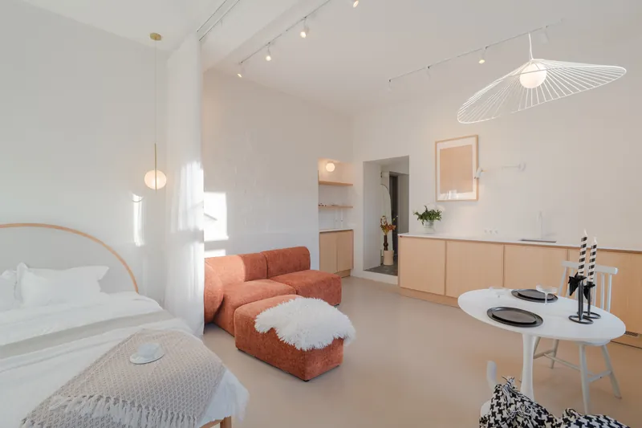
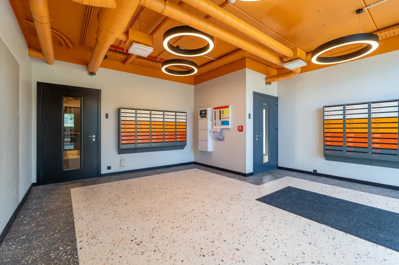

Enne · Telefonifoto
Enne · Telefonifoto
 Pärast · LINDJANAR
Pärast · LINDJANAR
Lühivastus
Korteri puhul on põhiprobleem ruumipuudus: sa ei saa piisavalt kaugele, et tuba tervikuna kaadrisse saada. Lahendus ei ole veel laiem objektiiv, vaid õige nurk, õige kaamerakõrgus ja rohkem kaadreid ühe ruumi kohta.
Eramaja pildistamisel on tavaliselt ruumi liikuda. Korteris ei ole. Sa seisad seina vastas, tuba on kolm meetrit lai ja telefon näitab kas kolmandikku toast või venitatud panoraami, kus diivan on kummis.
Siin on need asjad, mis linnakorteri puhul päriselt vahet teevad.
Väikeses ruumis on kõige tähtsam otsus see, kust sa seisad. Ukseavast tehtud kaader näitab tuba tunnelina. Toa nurgast tehtud kaader näitab korraga kahte seina ja põrandapinda nende vahel – ja just see paneb aju ruumi suurust hindama.
Praktikas: astu ruumi sisse, mine kõige kaugemasse nurka, pööra kaamera diagonaalis vastasnurga poole. Enamikus korteritubades on see üks-kaks kaadrit, mis toa päriselt ära seletavad.

Kui pildistad silmade kõrguselt, täidab pool kaadrist põrand. Kinnisvarafotol on kaamera enamasti 1,2–1,4 meetri kõrgusel – umbes aknalaua kõrgusel. Väikeses toas annab see kohe rohkem seina, rohkem lage ja vähem tarbetut põrandat.
Väike lisareegel: hoia kaamera loodis. Kui kallutad kaamerat ülespoole, hakkavad seinad kokku jooksma ja tuba näib kitsam, kui ta on.
Telefoni ülilai režiim ja odavad lainurkobjektiivid teevad ruumi suuremaks, aga mitte tasuta: servades venivad esemed laiali, sirged seinad muutuvad kumeraks ja proportsioonid lähevad paigast.
Ostja märkab seda näitamisel – ja tema esimene mõte ei ole „huvitav objektiiv“, vaid „mind püüti tüssata“. Väike korter, mis fotol on aus, saab vähem vaatajaid, aga tugevamaid.
Vannituba on korteris kõige raskem ruum pildistada ja üks tähtsamaid, mida ostja vaatab.
Enne · Telefonifoto
Pärast · LINDJANAR
Kitsas esik on kaadrina tänamatu, aga ostja vaatab teda, sest see on esimene ruum, kuhu ta astub. Ainus asi, mis siin päriselt aitab, on täiesti tühi põrand. Üks paar kingi vähem muudab koridori fotol nähtavalt laiemaks.
Pildista koridori pikisuunas, ukse juurest sisse vaadates, nii et lõpus paistaks järgmine ruum. Nii tekib sügavus ja korter hakkab kokku hakkama tervikuks, mitte üksikute tubade koguks.
Korteriostja ostab peale korteri veel maja, trepikoja ja asukoha. Kuulutus, kus need on olemas, saab vähem tühje küsimusi ja vähem asjatuid näitamisi:

Rusikareegel, mis meil praktikas välja on kujunenud:
| Ruum | Kaadreid | Mida need näitavad |
|---|---|---|
| Elutuba | 3–4 | kaks vastasnurka, üks vaade aknast, üks detail |
| Köök | 2–3 | köögiliin tervikuna, seos söögilauaga, tehnika |
| Magamistuba | 2 | tuba nurgast, kapid või garderoob |
| Vannituba | 2 | ruum tervikuna, dušinurk või vann |
| Esik | 1–2 | pikisuunas, kapid |
| Rõdu | 1–2 | rõdu ise, vaade rõdult |
Ühetoalise korteri puhul teeb see kokku 25–30 fotot, kolmetoalise puhul 35–45. Sellest, kui palju neist portaali panna, kirjutasime eraldi.
Korteri pildistamine algab 85€-st: stuudio või 1–2 tuba, 25–30 fotot, pildid käes 48 tunniga. Vaata ka tehtud töid.
Vaata hindu